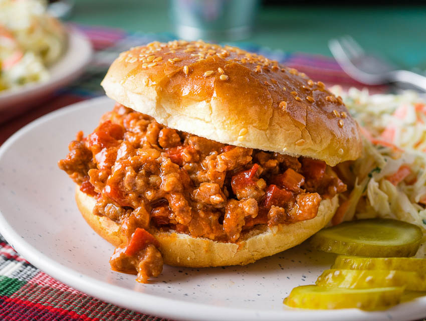

Sloppy Joe's

Description
Homemade Sloppy Joes don't have to be difficult to eat. Despite the name of this iconic retro dish, the secret to a great Sloppy Joe
is a thick, rich, almost dry consistency, which allows the sandwich to be eaten with your hands. Serve on hamburger buns.
Ingredients
- 1 1/2 pounds extra-lean ground beef
- 1/2 onion, diced
- 2 cloves garlic, minced
- 2 cups water, divided
- 3/4 cup ketchup
- 2 tablespoons brown sugar
- 1 teaspoon Dijon mustard
- 1 1/2 teaspoons salt, or to taste
- 1/2 teaspoon ground black pepper
- 1 dash of Worcestershire sauce
- 1 pinch cayenne pepper, or to tase
Steps
- Place ground beef and onion in a large skillet over medium heat; cook and stir until beef is browned and crumbled,
about 10 minutes.
- Stir in green pepper and garlic; cook and stir until softened, 2 to 3 minutes. Add 1 cup water and stir, scraping the pan
to dissolve any brown flavor bits from the bottom of the skillet.
- Stir in ketchup, brown sugar, Dijon mustard, salt, black pepper, and Worcestershire sauce. Add remaining 1 cup water and
bring mixture to a boil. Reduce heat to low and simmer, stirring occasionally, until liquid has evaporated and mixture is thick,
about 40 minutes.
- Season with salt, black pepper, Worcestershire sauce, and cayenne pepper.